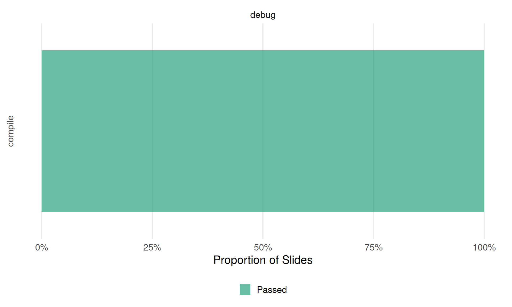

This document tabulates the state of the slides in
lecture_*/slides/<chapter>/ based on
lecture_*/slides-pdf/Displaying the latest commits of the lecture service repository and each of the currently included lectures (for debugging and race condition mitigation (kind of)).
| Branch | Last Commit | By | Message |
|---|---|---|---|
| main | 2026-02-17 18:39:42 | Lukas Burk | Add missing gitignore |
| Lecture | Branch | Last Commit | By | Message |
|---|---|---|---|---|
| lecture_debug | main | 2026-02-17 18:41:10 | Lukas Burk | Update service |
If you’re missing a lecture here after rendering this site
interactively, you might have to add them to the
included_lectures files or ensure they are downloaded
correctly.

lecture_advml/slides/gaussian-processes/slides-gp-bayes-lm.tex
\___________/ \________________/ \________________/
lecture chapter <slide-name>
lecture_advml/slides-pdf/slides-gp-bayes-lm.pdf
\___________________/
pdf_static / "Reference PDF"Tables are organized by lecture (first level) and lecture chapters
corresponding to folders in slides/<chapter> (second
level), with a table per chapter. chapters ignore certain folders like
attic and all.
<slide-name> with a
link to the compiled .tex file (if it compiles).latexmk -pdf. This can depend on the
availability of specific LaTeX dependencies, but assuming they are not
the issue, this usually indicates syntax issues or things like
\includegraphics calls using relative paths that work on
Overleaf but not locally.<slide-name>.tex against
slides-pdf/<slide-name>.pdf using
diff-pdf-visually:
diff-pdf (at a lower resolution
than the originals).2 chapters with a total of 7 slides
| Slide | Compiles? | Note |
|---|---|---|
| slides-debug-frames | ✅ | |
| slides-debug-minimal | ✅ | |
| slides-test-itemize | ✅ | |
| slides-test-ref-buttons | ✅ | |
| slides-test-splitv | ✅ |
| Slide | Compiles? | Note |
|---|---|---|
| slides-demo-splitv | ✅ | |
| slides-demo-summary | ✅ |
After compilation, .fls recorder files capture every
file the TeX engine opened. This allows robust detection of which
figures each slide actually uses, including dynamically constructed
paths (e.g. \foreach loops) that regex-based parsing
misses.
Figures in figure/ or figure_man/ that are
not referenced by any slide are orphaned. Figures
referenced by slides but missing from disk are
missing.
| Lecture | Chapter | Figures | Orphaned | Attic | Missing | Figs (man) | Orphaned (man) | Missing (man) |
|---|---|---|---|---|---|---|---|---|
| lecture_debug | debug | 139 | 138 | 0 | 0 | 16 | 13 | 0 |
| lecture_debug | demo | 139 | 133 | 0 | 0 | 16 | 13 | 0 |
138 orphaned figure(s) in figure/:
adaboost_viz_mlr3_1.pngadaboost_viz_mlr3_2.pngboosting_classif_1.pngboosting_classif_10.pngboosting_classif_100.pngboosting_classif_2.pngboosting_classif_5.pngboosting_classif_error_1.pngboosting_classif_error_10.pngboosting_classif_error_100.pngboosting_classif_error_2.pngboosting_classif_error_5.pngboosting_classif_example.pngboosting_interaction_example_gam.pngboosting_interaction_example_ID2.pngboosting_multiclass_1.pngboosting_multiclass_10.pngboosting_multiclass_100.pngboosting_multiclass_2.pngboosting_multiclass_5.pngboosting-cwb-bl-add1.pdfboosting-cwb-bl-add1.pdf.pngboosting-cwb-bl-add2.pdfboosting-cwb-bl-add2.pdf.pngboosting-cwb-bl-add3.pdfboosting-cwb-bl-add3.pdf.pngboosting-cwb-bl1-points.pngboosting-cwb-bl1.pngboosting-cwb-bl2-points.pngboosting-cwb-bl2.pngboosting-cwb-bl3-points.pngboosting-cwb-bl3.pngboosting-cwb-bl4.pngboosting-cwb-blpool1.pngboosting-cwb-blpool2.pngboosting-cwb-blpool3.pngboosting-cwb-blpool4.pngbspline-basis.pngcompboost-base-learner-linear.pngcompboost-base-learner-ridge.pngcompboost-base-learner-spline.pngcompboost-base-learner-tensor.pngcompboost-illustration-1.pngcompboost-illustration-3.pngcompboost-intercept-handling.pngcompboost-to-glm-iter1000.pngcompboost-to-glm-iter10000.pngcompboost-to-glm-iter250.pngcompboost-to-glm-iter500.pngcompboost-to-glm-iter5000.pngcwb-anim-nl/fig-iter-0001.pngcwb-anim-nl/fig-iter-0002.pngcwb-anim-nl/fig-iter-0005.pngcwb-anim-nl/fig-iter-0010.pngcwb-anim-nl/fig-iter-0015.pngcwb-anim-nl/fig-iter-0017.pngcwb-anim-nl/fig-iter-0018.pngcwb-anim-nl/fig-iter-0020.pngcwb-anim-nl/fig-iter-0023.pngcwb-anim-nl/fig-iter-0024.pngcwb-anim-nl/fig-iter-0030.pngcwb-anim-nl/fig-iter-0050.pngcwb-anim-nl/fig-iter-0070.pngcwb-anim-nl/fig-iter-0088.pngcwb-anim-nl/fig-iter-0089.pngcwb-anim-nl/fig-iter-0090.pngcwb-anim-nl/fig-iter-0110.pngcwb-anim-nl/fig-iter-0130.pngcwb-anim-nl/fig-iter-0150.pngcwb-anim/fig-iter-0001.pngcwb-anim/fig-iter-0002.pngcwb-anim/fig-iter-0005.pngcwb-anim/fig-iter-0010.pngcwb-anim/fig-iter-0015.pngcwb-anim/fig-iter-0016.pngcwb-anim/fig-iter-0020.pngcwb-anim/fig-iter-0030.pngcwb-anim/fig-iter-0037.pngcwb-anim/fig-iter-0038.pngcwb-anim/fig-iter-0050.pngcwb-anim/fig-iter-0070.pngcwb-anim/fig-iter-0090.pngcwb-anim/fig-iter-0110.pngcwb-anim/fig-iter-0116.pngcwb-anim/fig-iter-0117.pngcwb-anim/fig-iter-0140.pngcwb-anim/fig-iter-0150.pngfig-decomp1.pngfig-decomp2.pngfig-gb-concept-1.pngfig-gb-concept-2.pngfig-gb-concept-idea-1.pngfig-gb-concept-idea-2.pngfig-gb-concept-idea-3.pngfig-gb-concept-idea.pngfig-gb-concept-pseudo-resi-1.pngfig-gb-concept-pseudo-resi-2.pngfig-loss-huber-delta.pnggbm_anim_02.pnggbm_anim_03.pnggbm_anim_51.pnggbm_anim_data.pnggbm_anim_init.pnggbm_regu_oversmoothing_overfitting.pnggbm_sine_title.pnggbm_sine.pnggbm_spam.pngillustration_data_normal.pngillustration_gaussian_huber_02_10.pngillustration_gaussian_huber_2_10.pngillustration_gaussian_L1_1.pngillustration_gaussian_L1_10.pngillustration_gaussian_L1_100.pngillustration_gaussian_L1_2.pngillustration_gaussian_L1_3.pngillustration_gaussian_L1_lin_1.pngillustration_gaussian_L1_lin_10.pngillustration_gaussian_L1_lin_100.pngillustration_gaussian_L2_1.pngillustration_gaussian_L2_10.pngillustration_gaussian_L2_100.pngillustration_gaussian_L2_2.pngillustration_gaussian_L2_3.pngillustration_gaussian_L2_lin_1.pngillustration_gaussian_L2_lin_10.pngillustration_gaussian_L2_lin_100.pngillustration_tdist_L1_10.pngillustration_tdist_L1_100.pngillustration_tdist_L2_10.pngillustration_tdist_L2_100.pngillustration_title.pnginteraction_td1_d3.pnginteraction_td2_d3.pngpseudo_residual_1.pngsplit_finding_1.pngsplit_finding_2.pngstump_plots_noisy.pngstump_plots.png13 orphaned figure(s) in
figure_man/:
adaboost_example_adjusted.pngbagging_vs_boosting.pngboosting_classif_title.PNGboosting_interact_expl1.PNGboosting_interact_expl2.PNGboosting_interaction_depth1fit3D_x1.pngboosting_interaction_depth1fit3D_x2.pngboosting_interaction_targetfunction3D.pngneo1_3.pngneo2_3.pngneo3_4.pngneo3_6.pngneo6_3.png133 orphaned figure(s) in figure/:
adaboost_viz_mlr3_1.pngadaboost_viz_mlr3_2.pngboosting_classif_1.pngboosting_classif_10.pngboosting_classif_100.pngboosting_classif_2.pngboosting_classif_5.pngboosting_classif_error_1.pngboosting_classif_error_10.pngboosting_classif_error_100.pngboosting_classif_error_2.pngboosting_classif_error_5.pngboosting_classif_example.pngboosting_interaction_example_gam.pngboosting_interaction_example_ID2.pngboosting_multiclass_1.pngboosting_multiclass_10.pngboosting_multiclass_100.pngboosting_multiclass_2.pngboosting_multiclass_5.pngboosting-cwb-bl-add1.pdfboosting-cwb-bl-add1.pdf.pngboosting-cwb-bl-add2.pdfboosting-cwb-bl-add2.pdf.pngboosting-cwb-bl-add3.pdfboosting-cwb-bl-add3.pdf.pngboosting-cwb-bl1-points.pngboosting-cwb-bl1.pngboosting-cwb-bl2-points.pngboosting-cwb-bl2.pngboosting-cwb-bl3-points.pngboosting-cwb-bl3.pngboosting-cwb-bl4.pngbspline-basis.pngcompboost-base-learner-linear.pngcompboost-base-learner-ridge.pngcompboost-base-learner-spline.pngcompboost-base-learner-tensor.pngcompboost-illustration-1.pngcompboost-illustration-3.pngcompboost-intercept-handling.pngcompboost-to-glm-iter1000.pngcompboost-to-glm-iter10000.pngcompboost-to-glm-iter250.pngcompboost-to-glm-iter500.pngcompboost-to-glm-iter5000.pngcwb-anim-nl/fig-iter-0001.pngcwb-anim-nl/fig-iter-0002.pngcwb-anim-nl/fig-iter-0005.pngcwb-anim-nl/fig-iter-0010.pngcwb-anim-nl/fig-iter-0015.pngcwb-anim-nl/fig-iter-0017.pngcwb-anim-nl/fig-iter-0018.pngcwb-anim-nl/fig-iter-0020.pngcwb-anim-nl/fig-iter-0023.pngcwb-anim-nl/fig-iter-0024.pngcwb-anim-nl/fig-iter-0030.pngcwb-anim-nl/fig-iter-0050.pngcwb-anim-nl/fig-iter-0070.pngcwb-anim-nl/fig-iter-0088.pngcwb-anim-nl/fig-iter-0089.pngcwb-anim-nl/fig-iter-0090.pngcwb-anim-nl/fig-iter-0110.pngcwb-anim-nl/fig-iter-0130.pngcwb-anim-nl/fig-iter-0150.pngcwb-anim/fig-iter-0001.pngcwb-anim/fig-iter-0002.pngcwb-anim/fig-iter-0005.pngcwb-anim/fig-iter-0010.pngcwb-anim/fig-iter-0015.pngcwb-anim/fig-iter-0016.pngcwb-anim/fig-iter-0020.pngcwb-anim/fig-iter-0030.pngcwb-anim/fig-iter-0037.pngcwb-anim/fig-iter-0038.pngcwb-anim/fig-iter-0050.pngcwb-anim/fig-iter-0070.pngcwb-anim/fig-iter-0090.pngcwb-anim/fig-iter-0110.pngcwb-anim/fig-iter-0116.pngcwb-anim/fig-iter-0117.pngcwb-anim/fig-iter-0140.pngcwb-anim/fig-iter-0150.pngfig-decomp1.pngfig-decomp2.pngfig-gb-concept-1.pngfig-gb-concept-2.pngfig-gb-concept-idea-1.pngfig-gb-concept-idea-2.pngfig-gb-concept-idea-3.pngfig-gb-concept-idea.pngfig-gb-concept-pseudo-resi-1.pngfig-gb-concept-pseudo-resi-2.pngfig-loss-huber-delta.pnggbm_anim_02.pnggbm_anim_03.pnggbm_anim_51.pnggbm_anim_data.pnggbm_anim_init.pnggbm_regu_oversmoothing_overfitting.pnggbm_sine_title.pnggbm_spam.pngillustration_data_normal.pngillustration_gaussian_huber_02_10.pngillustration_gaussian_huber_2_10.pngillustration_gaussian_L1_1.pngillustration_gaussian_L1_10.pngillustration_gaussian_L1_100.pngillustration_gaussian_L1_2.pngillustration_gaussian_L1_3.pngillustration_gaussian_L1_lin_1.pngillustration_gaussian_L1_lin_10.pngillustration_gaussian_L1_lin_100.pngillustration_gaussian_L2_1.pngillustration_gaussian_L2_10.pngillustration_gaussian_L2_100.pngillustration_gaussian_L2_2.pngillustration_gaussian_L2_3.pngillustration_gaussian_L2_lin_1.pngillustration_gaussian_L2_lin_10.pngillustration_gaussian_L2_lin_100.pngillustration_tdist_L1_10.pngillustration_tdist_L1_100.pngillustration_tdist_L2_10.pngillustration_tdist_L2_100.pngillustration_title.pnginteraction_td1_d3.pnginteraction_td2_d3.pngpseudo_residual_1.pngsplit_finding_1.pngsplit_finding_2.pngstump_plots_noisy.pngstump_plots.png13 orphaned figure(s) in
figure_man/:
adaboost_example_adjusted.pngbagging_vs_boosting.pngboosting_classif_title.PNGboosting_interact_expl1.PNGboosting_interact_expl2.PNGboosting_interaction_depth1fit3D_x1.pngboosting_interaction_depth1fit3D_x2.pngboosting_interaction_targetfunction3D.pngneo1_3.pngneo2_3.pngneo3_4.pngneo3_6.pngneo6_3.png